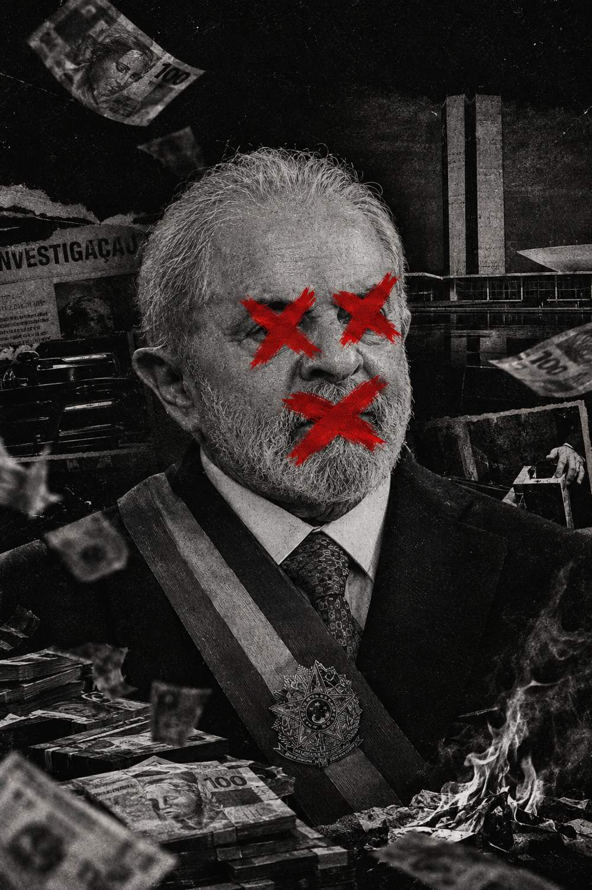

Processos, decisões, políticas econômicas e controvérsias que ajudam a entender o Brasil de hoje.
Começar a investigação ↓Uma análise baseada em documentos e fontes públicas.
Mas o que realmente está acontecendo?
Entre decisões judiciais, políticas econômicas e disputas políticas, existem fatos que merecem ser examinados.
Investigação, denúncia, condenação e anulação são coisas diferentes. Cada card mostra em que etapa o caso está.
Fontes: STF (stf.jus.br), STJ (stj.jus.br), TRF-4 (trf4.jus.br). Confira as decisões nos autos antes de republicar.Não é previsão. É o que o governo fez, o que se critica, o que o governo responde e o que os dados mostram, com data e fonte.
Déficit primário do Governo Central em junho de 2026. No acumulado de 12 meses: R$ 144,1 bi, ou 1,08% do PIB. Fonte: Tesouro Nacional, divulgado em 30/07/2026.
Em junho de 2026, a arrecadação federal foi de R$ 264,4 bi, a maior para o mês desde 2000, e as despesas do Governo Central subiram 9% acima da inflação. Dívida pública: dado a inserir (Tesouro/Banco Central).
Fonte: Receita Federal e Tesouro Nacional, via Agência Estado (30/07/2026).O governo apresenta as próprias justificativas para suas decisões.
Agora veja os fatos.
Processos. Decisões. Controvérsias. Políticas econômicas. Documentos. Datas.
Tudo organizado em uma investigação cronológica para você compreender o contexto antes de tirar suas próprias conclusões.
Depois de conhecer tudo,
a sua opinião continua a mesma?
A investigação completa sobre os principais acontecimentos, processos, decisões e controvérsias da trajetória política de Lula e do Brasil.
ACESSO IMEDIATO • PAGAMENTO SEGURO • CONTEÚDO DIGITAL
Você não precisa concordar com tudo.
Precisa apenas conhecer os fatos antes de decidir o que pensa.
ESPECIAL INVESTIGATIVO • 2026
Ver documentos e fontes